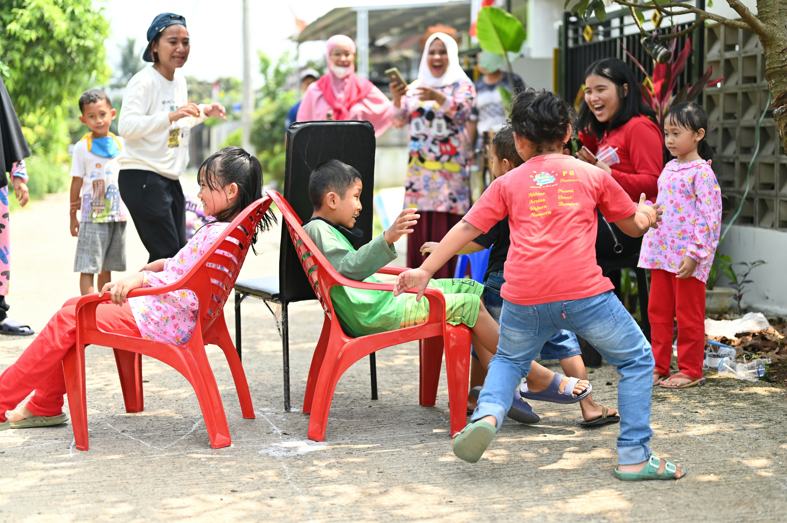
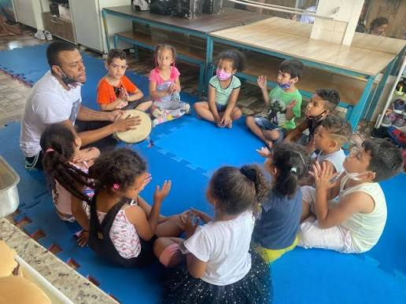
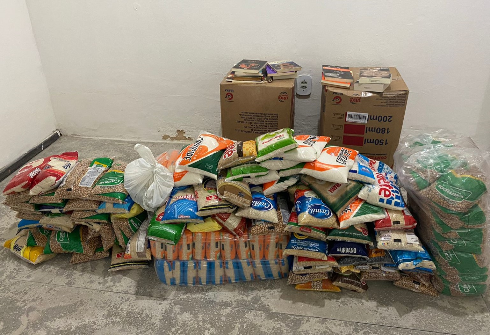
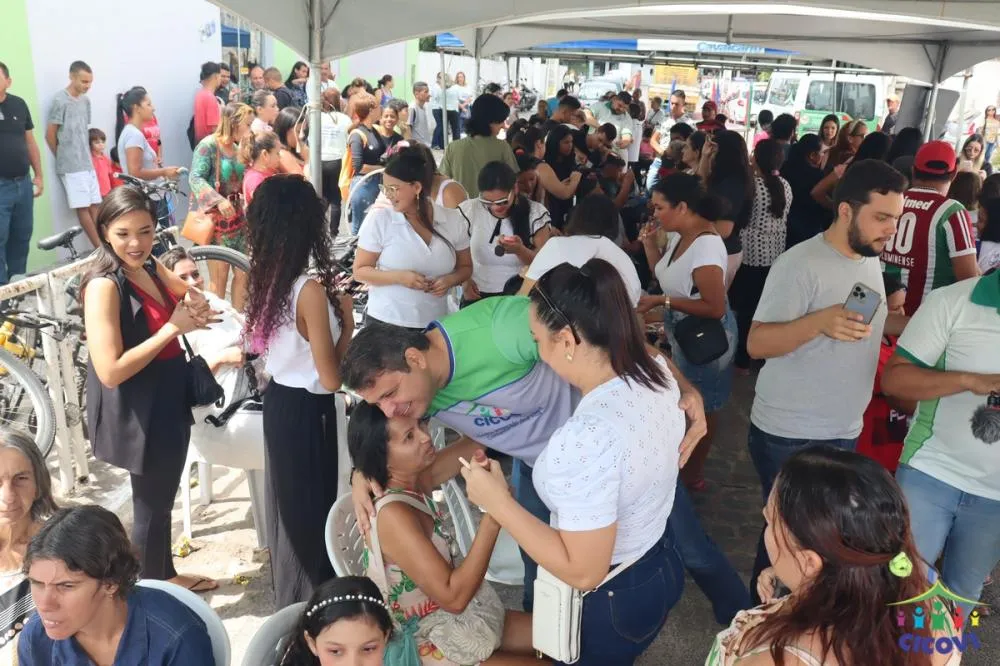

Juntos podemos transformar vidas
Toda criança merece a oportunidade de florescer
Acreditamos que o acesso à educação, à alimentação e ao acolhimento pode transformar o futuro de crianças e famílias.

Quem Somos
Pequenas ações, grandes transformações
O Instituto Flores do Sertão é uma organização criada com o propósito de apoiar crianças e famílias em situação de vulnerabilidade social.
Por meio de iniciativas educativas, campanhas de arrecadação e atividades comunitárias, buscamos incentivar a solidariedade e criar oportunidades.
Nossos Projetos
Projetos que fazem a diferença
Conheça algumas das ações desenvolvidas pelo nosso instituto.

Educação para o Futuro
Atividades educativas, leitura e incentivo à aprendizagem das crianças.

Alimento e Esperança
Campanhas de arrecadação de alimentos para famílias da comunidade.

Comunidade Unida
Ações solidárias que aproximam voluntários e famílias do Sertão.
Faça a diferença
Existem muitas formas de ajudar
Doe alimentos
Contribua com alimentos não perecíveis para as campanhas solidárias.
Seja voluntário
Doe seu tempo e suas habilidades em atividades comunitárias.
Doe materiais escolares
Ajude a ampliar as oportunidades de aprendizagem das crianças.
Contatos
Quer participar de uma campanha ou conhecer melhor nossos projetos? Entre em contato conosco.
Nosso email: institutofloresdosertao@email.com
Nosso telefone: (83) 99999-9999